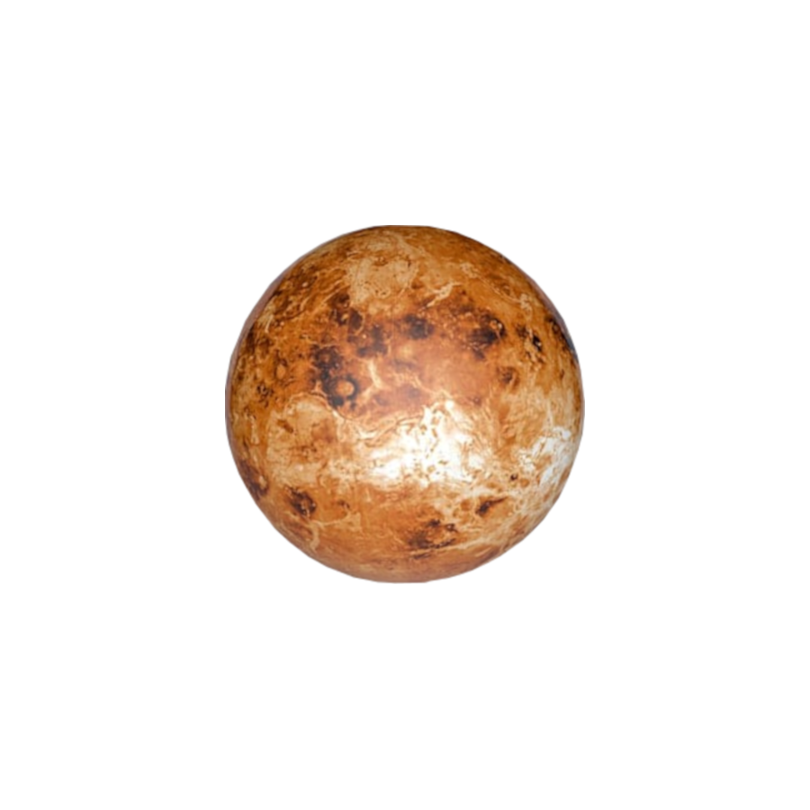

Wenus

-
Pierwszą sondę kosmiczną na Wenus wysłali Rosjanie. W ramach programu
Wenera wysłano wysłano pierwszą sondę 12 lutego 1961 roku. Niestety
stracono z nią kontakt 7 dni po starcie. Do powierzchni Wenus dotarła
dopiero sonda Wenera 3 w dniu 1 marca 1966 roku.
-
Na powierzchni planety odkryto ponad 1600 wulkanów. 167 z nich ma
średnicę większą niż 100 km. Pomimo tak dużej ilości, nie zaobserwowano
jakichkolwiek erupcji wulkanicznych na powierzchni planety. Wiadomo
natomiast, że aktywność wulkaniczna na Wenus występowała w ciągu
ostatnich 2,5 milionów lat. Odkrycie było możliwe dzięki misji Venus
Expres wysłanej przez Europejską Agencję Kosmiczną w 2006 roku. Misja
miała trwać 500 dni jednak wielokrotnie ją wydłużano i ostatecznie
zakończono w roku 2015.
-
Najwyższym szczytem na planecie jest Skadi Mons. Góra ta położona w
Górach Maxwella na północno-wschodniej półkuli planety. Wybija się ponad
6,4 kilometra ponad otoczenie a na średnią wysokość ponad powierzchnię
planety aż na 10,7 kilometra. Większość szczytu Maxwella pokrytych jest
śniegiem. Wenusjański śnieg różni się jednak znacznie od śniegu, który
mamy na Ziemi.
- Rok na wenus trwa około 225 dni.
- Dzień na Wenus trwa 118 ziemskich dni i 16 godzin
Powrót na stronę główną